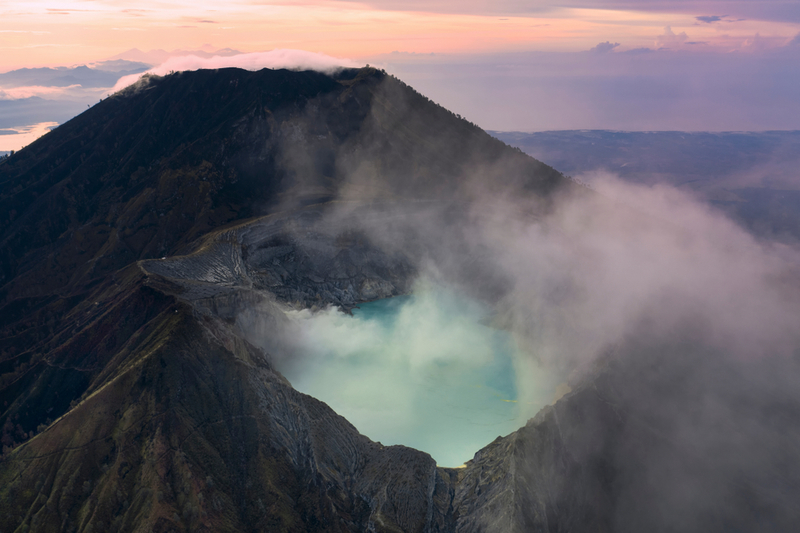

4 Alasan Kenapa Kamu Harus Mengunjungi Gunung Ijen
Gunung Ijen merupakan gunung berapi yang terletak di perbatasan antara Banyuwangi dan Bondowoso. Gunung yang memiliki ketinggian mencapai 2.386 mdpl ini dikenal punya pesona yang sangat indah. Keindahannya bahkan sudah dikenal oleh banyak orang di dunia, lho. Buat kamu yang masih ragu untuk wisata Gunung Ijen, alasan di bawah ini mungkin bisa bikin kamu lebih yakin untuk jalan-jalan ke sana.
1. Melihat pemandangan matahari terbitWisata Gunung Ijen juga jadi spot terbaik untuk melihat matahari terbit. Sinar matahari pagi yang memancar di sini berwarna hijau toska. Sinar kehijauan ini dihasilkan dari cahaya matahari yang memantul di air di dalam kawah yang berwarna hijau kebiruan. Warna air di Kawah Ijen memang sangat menarik namun sayang suhunya mencapai 200 derajat celcius jadi sangat panas dan berbahaya untuk didekati.
2. Pesona api biru di Kawah IjenApi biru atau sering juga disebut blue fire Gunung Ijen adalah daya tarik utama di sini. Luas Kawah Ijen sendiri mencapai 5.466 hektar. Pada siang hari kawah ini sangat mempesona karena kamu bisa melihat hamparan pohon manisrejo yang berwarna kemerahan. Dari sini kamu juga bisa melihat gugusan gunung lain seperti Gunung Merapi, Gunung Suket, Gunung Rante, dll.
Pesona utama dari Kawah Ijen muncul ketika malam hari. Saat malam tiba, area Kawah Ijen mengeluarkan pancaran api berwarna biru. Warna biru dihasilkan dari cairan belerang yang banyak ditemukan di kawasan Gunung ijen. Namun api biru ini hanya bisa dilihat kalau susana sekitar gelap.
Selain Kawah Ijen, Gunung Ijen Banyuwangi juga menawarkan pemandangan lain yaitu dam dan solfatara. Di sebelah tenggara Gunung Ijen terdapat solfatara atau dinding danau kawah dan di sebelah barat terdapat dam yang merupakan hulu Kali Banyupait.
Dam dan solfatara ini mengeluarkan bau gas sulfur yang sangat menyengat. Meskipun sangat menarik area ini sulit dijangkau karena treknya ekstrem dan sering longsor.
Sebelumnya sudah kita ketahui bahwa area Gunung Ijen terdapat banyak sulfur atau belerang. Nah, hal ini dimanfaatkan penduduk sekitar untuk menambang belerang secara tradisional. Mereka biasanya membawa keranjang besar yang berisi bongkahan belerang. Mereka memikul keranjang belerang itu sampai pos pengepul.